ALITAS
editorial

Explora mi portafolio editorial, página por página.
ALITAS · Portafolio editorial
Ideas que dan alas.
Explora mi portafolio editorial, página por página.
Cargando la experiencia 3D…
Toca una página para pasarla · arrastra para girar · usa la rueda o pellizca para acercar · mueve con dos dedos para explorar los detalles. Con el teclado, enfoca el libro y usa las flechas para pasar páginas y + o − para acercar.
Ver las 15 páginas en plano
Abrir el PDF original completo ↗

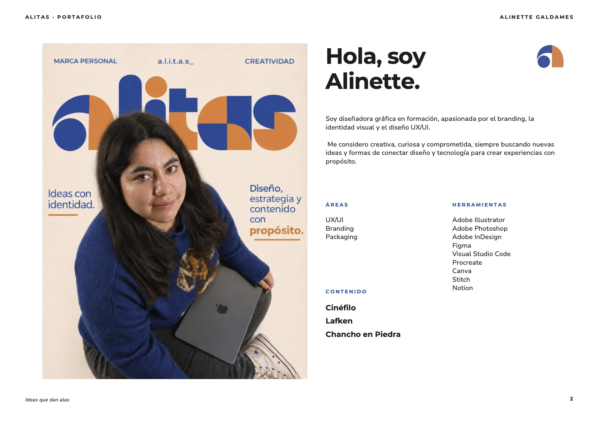
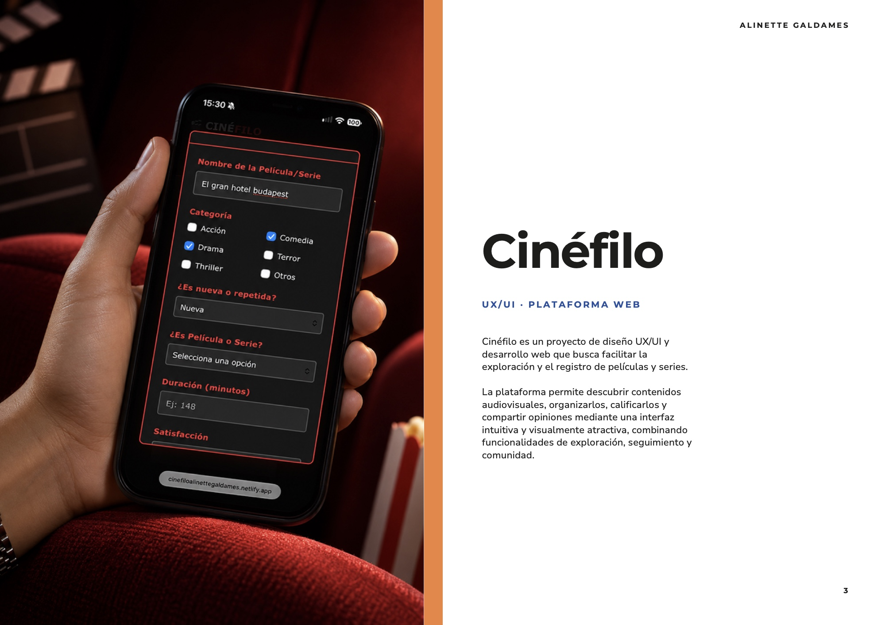
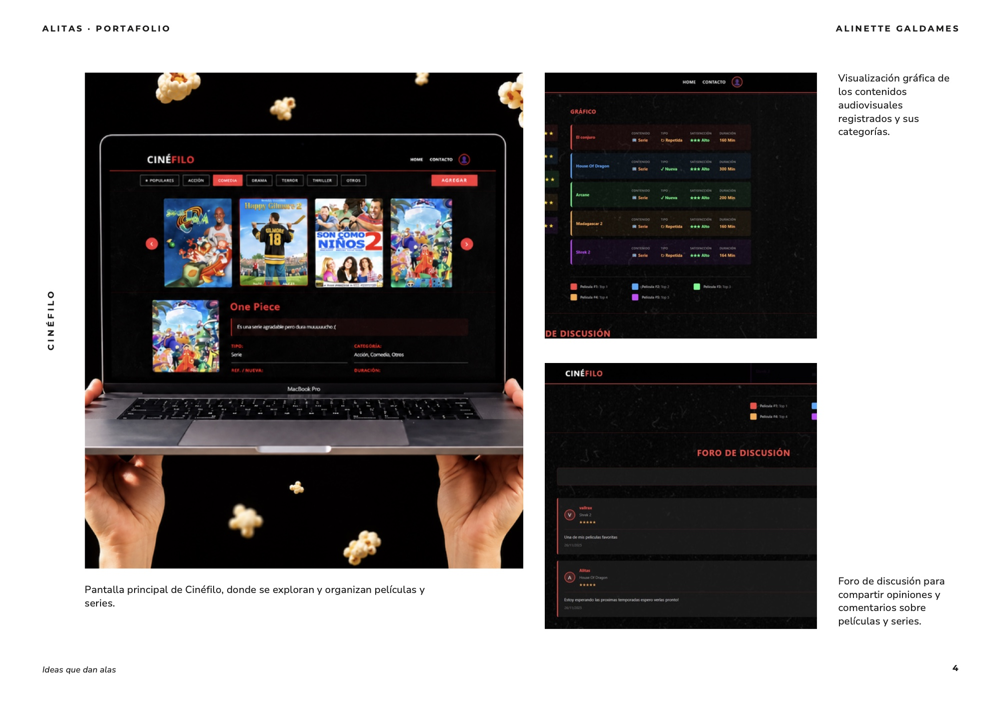
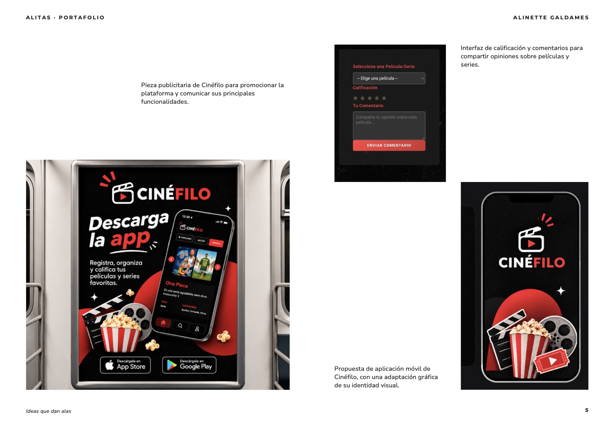
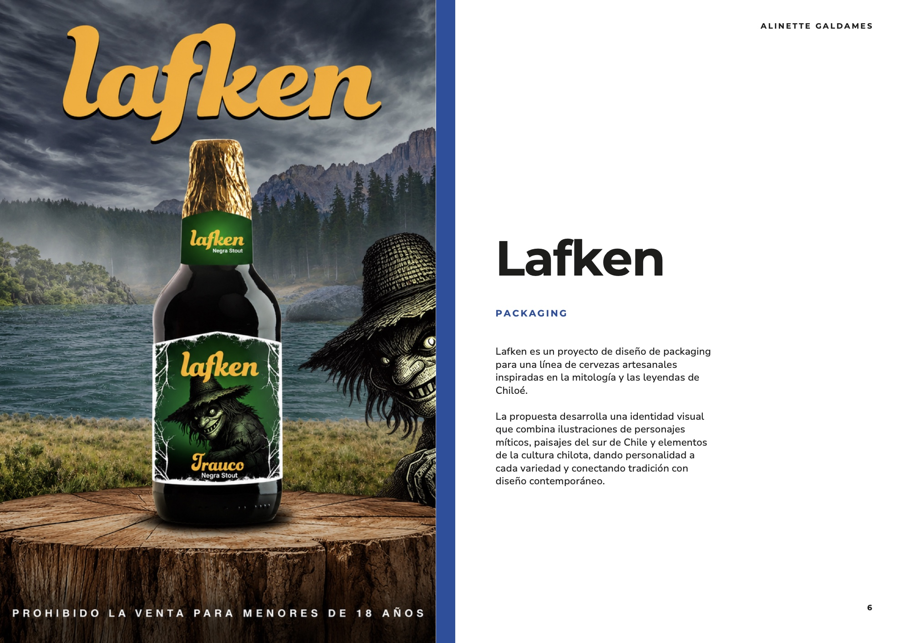
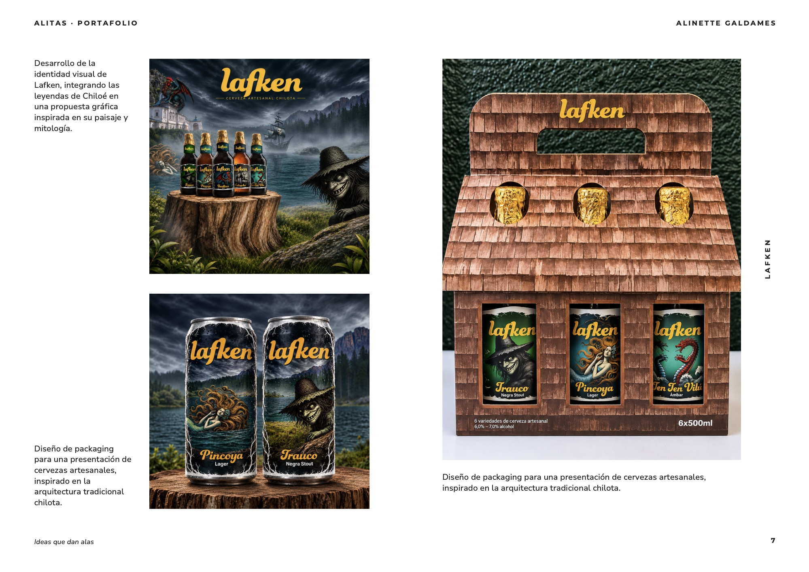
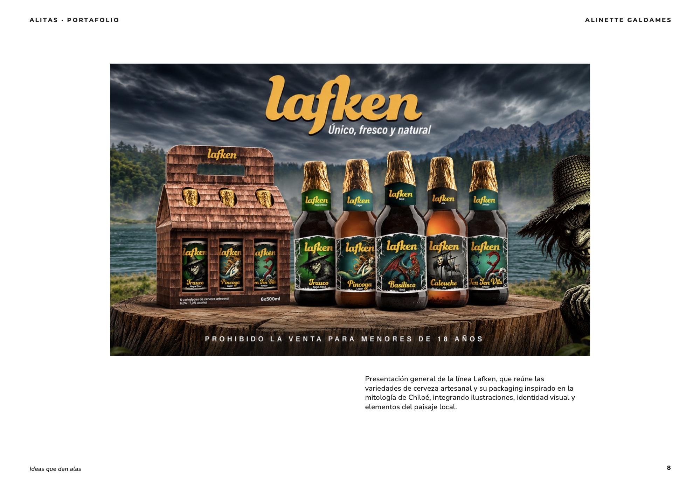
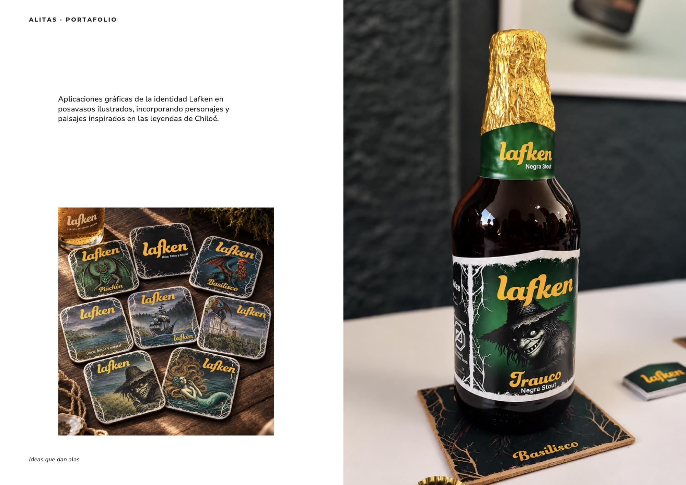
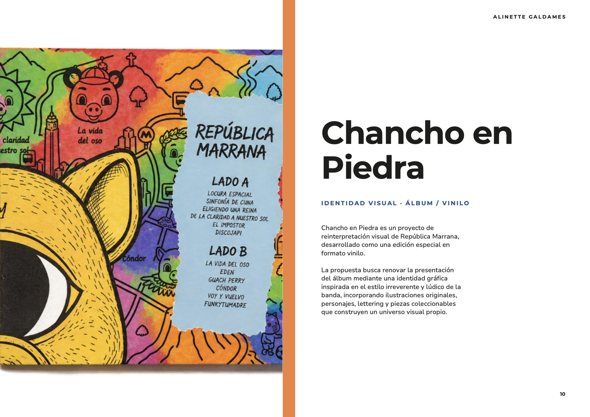
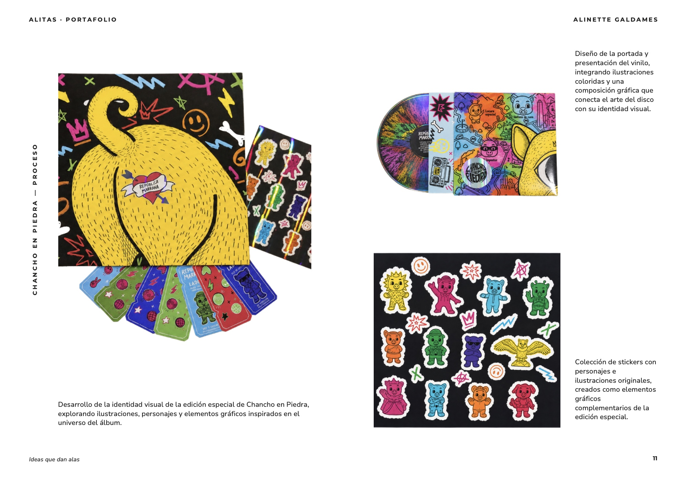
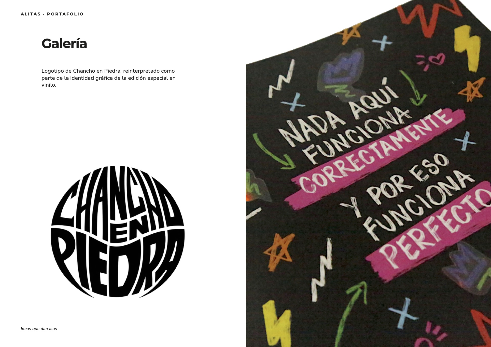
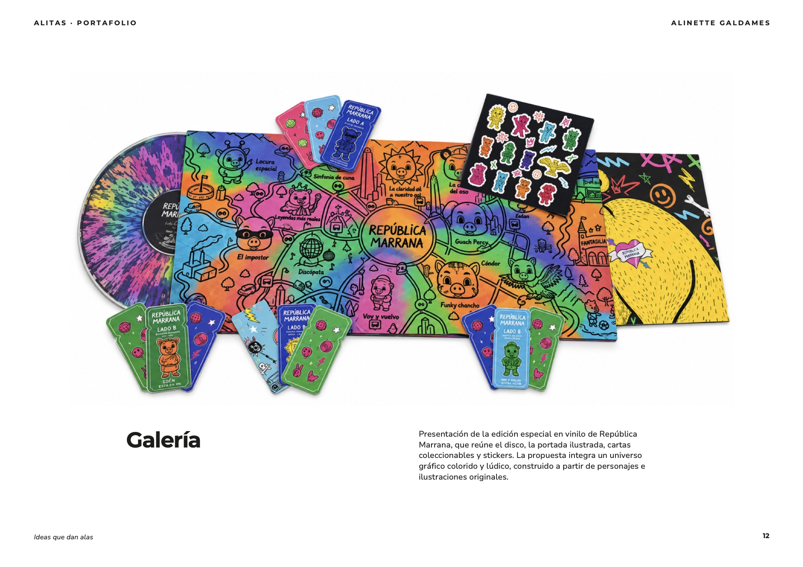
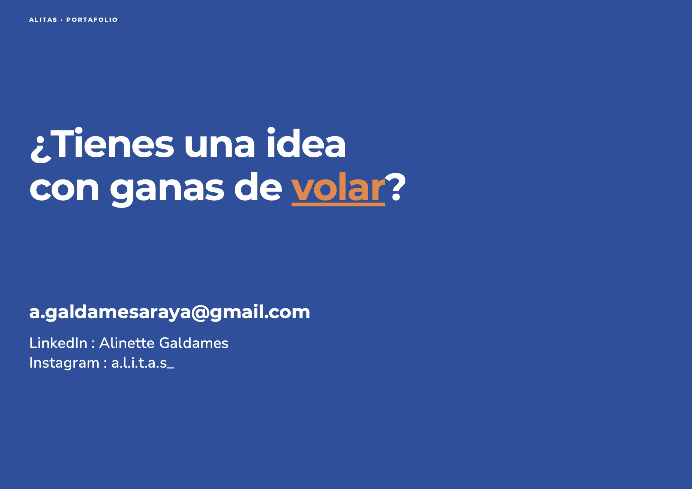
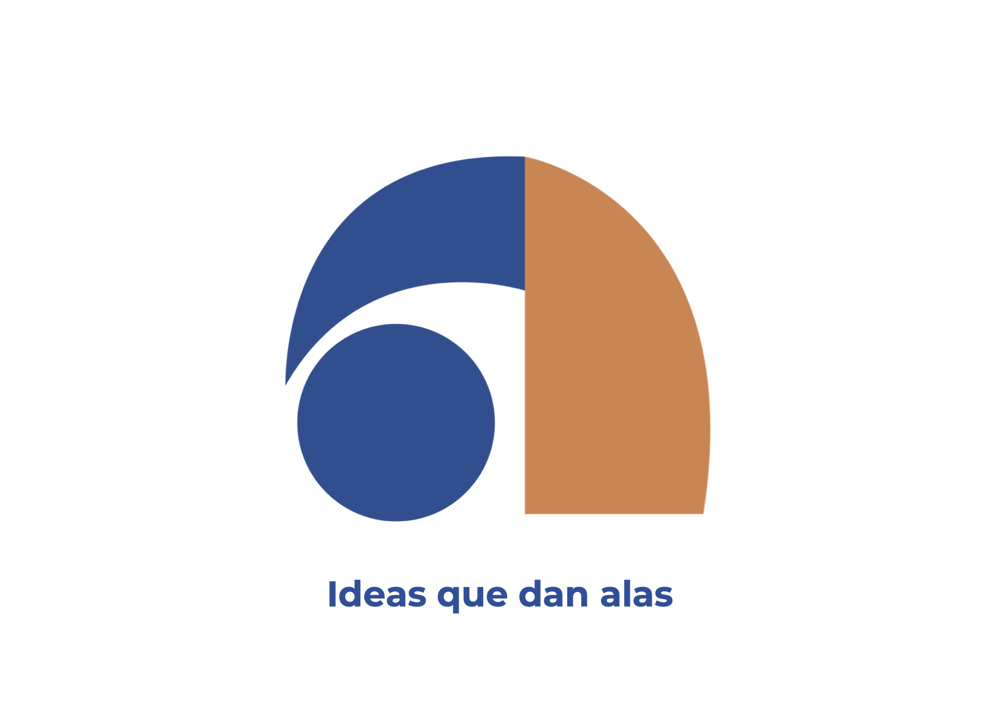
 ← Volver a todos los proyectos
← Volver a todos los proyectos